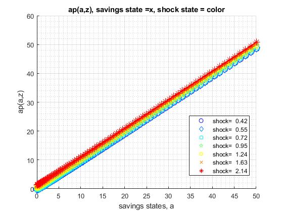
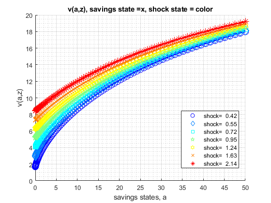
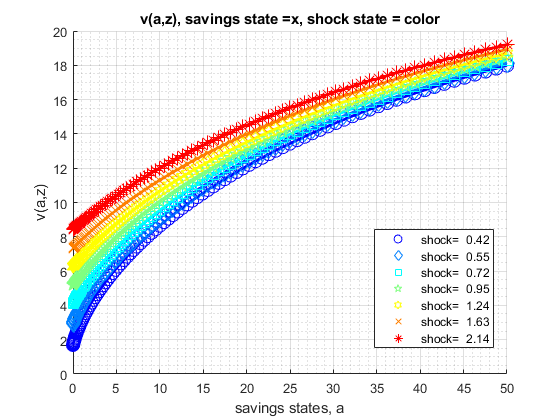

FF_VFI_AZ_BISEC_VEC (vectorized exact choice) Dynamic Savings Problem
Fast vectorized solution for solving the dynamic programming problem with fixed asset state space, but continuous asset choices. Solution obtained via bi(multi)-section. Solves for the fraction of resources to save, this is then translated to asset choice level
Uses first order conditions. The first order condition has two components: let u(c(ap,a,z)) be current utility, let beta*EV(ap|z) be the expected value from making choice ap given current shock z. d(u)/d(ap) is analytical; the EV(ap|z) are a set of linear splines each spline for each shock point z, dEV/d(ap) are just the slopes for each spline segment. With both partials, we can easily use bisection to solve for optimal exact choices.
Obtains policy and value functions. Shock is AR(1). This function is looped, and extremely slow when state-space increases in size. This function is useful as a working template for developing models that rely on asset and shocks.
* MP_PARAMS controls model preference, prices, shock and asset grid parameters. * MP_SUPPORT controls convergence criterion, printing and summary controls
mp_params = containers.Map('KeyType','char', 'ValueType','any');
mp_params('fl_crra') = 1.5;
mp_params('fl_beta') = 0.95;
mp_params('fl_w') = 1.05;
mp_params('fl_r') = 0.03;
mp_params('fl_a_min') = 0;
mp_params('fl_a_max') = 50;
mp_params('it_a_n') = 25;
mp_params('st_grid_type') = 'grid_powerspace';
mp_params('fl_z_persist') = 0.60;
mp_params('fl_shk_std') = 0.10;
mp_params('it_z_n') = 5;
mp_params('st_grid_type') = 'grid_powerspace'; mp_support = containers.Map('KeyType','char', 'ValueType','any');
mp_support('fl_lowestc') = -10e10;
mp_support('it_maxiter_val') = 500;
mp_support('fl_tol_val') = 10e-5;
% printer various information
mp_support('bl_timer') = true;
mp_support('bl_print_params') = false;
mp_support('bl_print_iterinfo') = false;
% These names must match keys of mp_solu: v=value, ap=savings choice,
c=consumption, y=income, coh=cash-on-hand (income + savings),
savefraccoh = ap/coh.
% what outcomes to store in the mp_solu for export
mp_support('ls_slout') = {'v', 'ap', 'c', 'y', 'coh', 'savefraccoh'};
% outcome for ff_container_map_display
mp_support('ls_ffcmd') = {'v', 'ap', 'c', 'y', 'coh', 'savefraccoh'};
% outcome for ff_summ_nd_array
mp_support('ls_ffsna') = {'v', 'ap', 'c', 'y', 'coh', 'savefraccoh'};
% outcome for ff_graph_grid
mp_support('ls_ffgrh') = {'v', 'ap', 'c', 'y', 'coh', 'savefraccoh'};
% outcome for ff_summ_nd_array
mp_support('ffsna_opt_it_row_n_keep') = 10;
% outcome for ff_summ_nd_array
mp_support('ffsna_opt_it_col_n_keep') = 9;[MP_VALPOL_OUT, FLAG] = FF_VFI_AZ_BISEC_VEC() default savings and shock model simulation
[MP_VALPOL_OUT, FLAG] = FF_VFI_AZ_BISEC_VEC(MP_PARAMS) change model parameters through MP_PARAMS
[MP_VALPOL_OUT, FLAG] = FF_VFI_AZ_BISEC_VEC(MP_PARAMS, MP_SUPPORT) change various printing, storaging, graphing, convergence etc controls through MP_SUPPORT
[MP_VALPOL_OUT, FLAG] = FF_VFI_AZ_BISEC_VEC(MP_PARAMS, MP_SUPPORT, MP_SUPPORT_GRAPH) also changing graphing options, see the FF_GRAPH_GRID function for what key value paris can be specified.
see also FX_VFI_AZ_BISEC_VEC, FF_VFI_AZ_BISEC_LOOP, FF_VFI_AZ_LOOP, FF_VFI_AZ_VEC, FF_GRAPH_GRID
Contents
- Set Default and Parse Inputs
- Default Model Parameters
- Parse mp_params
- Generate A and Z Grids
- Default Support Parameters
- Whether Additional Outcomes Should be Stored
- Initialize Matrix
- Define Functions
- Compute Fixed Resource Matrix by States
- Dynamically Solve
- Convergence Results
- Results for Printing, and Graphing
- Print Parameter Information
- Show Value Function Convergence Information
- ls_ffcmd summary
- ls_ffsna summarize full
- ls_ffgrh graph
- Store Results for Output
function [mp_valpol_out, flag] = ff_vfi_az_bisec_vec(varargin)
Set Default and Parse Inputs
if (~isempty(varargin)) if (length(varargin) == 1) [mp_params_ext] = varargin{:}; elseif (length(varargin) == 2) [mp_params_ext, mp_support_ext] = varargin{:}; end else close all; mp_support_ext = containers.Map('KeyType','char', 'ValueType','any'); mp_support_ext('bl_timer') = true; mp_support_ext('bl_print_params') = true; mp_support_ext('bl_print_iterinfo') = true; mp_support_ext('ls_ffcmd') = {'v', 'ap', 'c', 'y', 'coh', 'savefraccoh'}; mp_support_ext('ls_ffsna') = {'ap'}; mp_support_ext('ls_ffgrh') = {'v', 'ap', 'c', 'y', 'savefraccoh'}; mp_support_ext('ls_store') = {'v', 'ap', 'c', 'y', 'coh'}; mp_support_ext('ffsna_opt_it_row_n_keep') = 10; mp_support_ext('ffsna_opt_it_col_n_keep') = 9; end
Default Model Parameters
support_map
mp_params = containers.Map('KeyType','char', 'ValueType','any'); mp_params('fl_crra') = 1.5; mp_params('fl_beta') = 0.94; mp_params('fl_w') = 1.28; mp_params('fl_r') = 0.025; mp_params('fl_a_min') = 0; mp_params('fl_a_max') = 50; mp_params('it_a_n') = 100; mp_params('st_grid_type') = 'grid_linspace'; mp_params('fl_z_persist') = 0.80; mp_params('fl_shk_std') = 0.20; mp_params('it_z_n') = 7; % override default support_map values if (length(varargin)>=1) mp_params = [mp_params; mp_params_ext]; end
Parse mp_params
params_group = values(mp_params, {'fl_crra', 'fl_beta'});
[fl_crra, fl_beta] = params_group{:};
params_group = values(mp_params, {'fl_w', 'fl_r'});
[fl_w, fl_r] = params_group{:};
params_group = values(mp_params, {'fl_a_min', 'fl_a_max', 'it_a_n', 'st_grid_type'});
[fl_a_min, fl_a_max, it_a_n, st_grid_type] = params_group{:};
params_group = values(mp_params, {'fl_z_persist', 'fl_shk_std', 'it_z_n'});
[fl_z_persist, fl_shk_std, it_z_n] = params_group{:};
Generate A and Z Grids
Same min and max and grid points
[ar_a] = ff_saveborr_grid(fl_a_min, fl_a_max, it_a_n, st_grid_type); ar_a = ar_a'; % shock vector and transition, normalize mean exp(shk) to 1 [ar_z, mt_z_trans] = ffy_rouwenhorst(fl_z_persist, fl_shk_std, it_z_n); ar_z = exp(ar_z'); % normalize mean of exp to 1, fl_shk_std does not shift mean. ar_z_stationary = mt_z_trans^1000; ar_z_stationary = ar_z_stationary(1,:); fl_labor_agg = ar_z_stationary*exp(ar_z'); ar_z = exp(ar_z)/fl_labor_agg;
Default Support Parameters
support_map
mp_support = containers.Map('KeyType','char', 'ValueType','any'); % Model Control mp_support('fl_lowestc') = -10e10; % Iteration Control mp_support('it_maxiter_val') = 500; mp_support('fl_tol_val') = 10e-5; % printer various information mp_support('bl_timer') = true; mp_support('bl_print_params') = false; mp_support('bl_print_iterinfo') = false; % These names must match keys of mp_solu: % what outcomes to store in the mp_solu for export mp_support('ls_slout') = {'v', 'ap', 'c', 'y', 'coh', 'savefraccoh'}; % outcome for ff_container_map_display mp_support('ls_ffcmd') = {'ap'}; % outcome for ff_summ_nd_array mp_support('ls_ffsna') = {}; % outcome for ff_graph_grid mp_support('ls_ffgrh') = {}; % outcome for ff_summ_nd_array mp_support('ffsna_opt_it_row_n_keep') = 10; % outcome for ff_summ_nd_array mp_support('ffsna_opt_it_col_n_keep') = 9; % override default support_map values if (length(varargin)>=2 || isempty(varargin)) mp_support = [mp_support; mp_support_ext]; end % Parse mp_support params_group = values(mp_support, {'fl_lowestc'}); [fl_lowestc] = params_group{:}; params_group = values(mp_support, {'it_maxiter_val', 'fl_tol_val'}); [it_maxiter_val, fl_tol_val] = params_group{:}; params_group = values(mp_support, {'bl_timer', 'bl_print_params', 'bl_print_iterinfo'}); [bl_timer, bl_print_params, bl_print_iterinfo] = params_group{:}; params_group = values(mp_support, ... {'ls_slout', 'ls_ffcmd', 'ls_ffsna', 'ls_ffgrh',... 'ffsna_opt_it_row_n_keep', 'ffsna_opt_it_col_n_keep'}); [ls_slout, ls_ffcmd, ls_ffsna, ls_ffgrh,... ffsna_opt_it_row_n_keep, ffsna_opt_it_col_n_keep] = params_group{:};
Whether Additional Outcomes Should be Stored
when state space are large, might not be a good idea to store all possible model output matrixes, but could be controlled with these if things should be outputed. If bl_store_more = true, will output store all additional possible outcomes if bl_vfi_store_all = true. Internally, which output becomes tabular or graphical controled by ls_ffcmd, ls_ffsna, and ls_ffgrh.
% If to store additional outcomes cl_more = {'c', 'y'}; ar_find_slout = cell2mat(cellfun(@(m) find(strcmp(ls_slout, m)), cl_more, 'UniformOutput', false)); ar_find_ffcmd = cell2mat(cellfun(@(m) find(strcmp(ls_ffcmd, m)), cl_more, 'UniformOutput', false)); ar_find_ffsna = cell2mat(cellfun(@(m) find(strcmp(ls_ffsna, m)), cl_more, 'UniformOutput', false)); ar_find_ffgrh = cell2mat(cellfun(@(m) find(strcmp(ls_ffgrh, m)), cl_more, 'UniformOutput', false)); if (length(ar_find_slout) + length(ar_find_ffcmd) + length(ar_find_ffsna) + length(ar_find_ffgrh) >1) bl_store_more = true; end
Initialize Matrix
mt_val_lst = zeros(length(ar_a),length(ar_z)); mt_val_cur = mt_val_lst; mt_aprime_lst = zeros(length(ar_a),length(ar_z)); mt_aprime_cur = mt_aprime_lst; mt_aprime_idx = zeros(length(ar_a),length(ar_z)); ar_val_diff_norm = zeros([it_maxiter_val, 1]); ar_pol_diff_norm = zeros([it_maxiter_val, 1]); mt_pol_perc_change = zeros([it_maxiter_val, length(ar_z)]); if (bl_store_more) mt_c = zeros(length(ar_a),length(ar_z)); mt_y = zeros(length(ar_a),length(ar_z)); mt_coh = zeros(length(ar_a),length(ar_z)); end
Define Functions
% Current Function and their Derivatives if(fl_crra == 1) f_util = @(c) log(c); f_du_da = @(c) -1./(c); else f_util = @(c) (((c).^(1-fl_crra)-1)./(1-fl_crra)); f_du_da = @(c) -1./(c.^fl_crra); end % Utility f_U = @(u, Ev) (u + fl_beta.*Ev); f_FOC = @(duda, devda) (duda + fl_beta.*devda); % resources f_y = @(z, b) (z*fl_w + b.*(fl_r)); f_coh = @(z, b) (z*fl_w + b.*(1+fl_r)); f_cons = @(z, b, bprime) (f_coh(z, b) - bprime);
Compute Fixed Resource Matrix by States
% C1. Resource Matrix Broadcast: length(ar_a) by length(ar_z) matrix mt_resources = f_coh(ar_z, ar_a'); mt_z = ar_z(ones([1,length(ar_a)]),1:length(ar_z)); mt_z_ctr = repmat(1:length(ar_z), [length(ar_a), 1]); % C2. Flatten the resource matrix, amz = a mesh z: ar_resources_amz = mt_resources(:); ar_z_amz = mt_z(:); ar_z_ctr_amz = mt_z_ctr(:);
Dynamically Solve
if (bl_timer) tic end % initialize fl_diff = 1; it_iter = 0; % After converge, one more iteration to store results bl_continue = true; bl_converged = false; % Loop 0, continuous VFI iteration until convergence while bl_continue % A. Solve For EV(ap,z) = EV(ap,zp|z)f(zp|z) for all possible ap points % Note that EV(ap,z) is unrelated to current asset state a mt_ev_ap_z = zeros(length(ar_a), length(ar_z)); for it_z_ctr = 1:length(ar_z) for it_ap_ctr = 1:length(ar_a) % Add to each cell of mt_ev_ap_z, integrating over f(zp|z) for it_zprime_ctr = 1:length(ar_z) mt_ev_ap_z(it_ap_ctr, it_z_ctr) = mt_ev_ap_z(it_ap_ctr, it_z_ctr) ... + mt_z_trans(it_z_ctr,it_zprime_ctr)*mt_val_lst(it_ap_ctr,it_zprime_ctr); end end end % B. z specific EV Slope: EV(ap,z)/d(ap) % Given the discretized EV matrix structure, we have a matrix of % splines, get the slopes of the spline segments. These are the % derivatives of the marginal effects of additional savings for each % splinde segment conditional on shock. mt_deri_dev_dap = diff(mt_ev_ap_z)./diff(ar_a'); % C. Generate Vectorized FOC Evaluator % x = fl_aprime_frac fc_ffi_vec_foc_u_v_ap = @(x) ffi_vec_foc_u_v_ap(... x, ar_a, ... ar_resources_amz, ar_z_ctr_amz, mt_deri_dev_dap, ... f_du_da, f_FOC); % D. Solve via Bisection [ar_opti_saveborr_frac_amz] = ff_optim_bisec_savezrone(fc_ffi_vec_foc_u_v_ap); % E. Evaluate at Bounds ar_nan_idx = isnan(ar_opti_saveborr_frac_amz); if(sum(ar_nan_idx)>0) ar_min_max = [0, 1-1E-5]; mt_val_min_max = zeros(sum(ar_nan_idx), length(ar_min_max)); for it_minmax = [1,2] [~, mt_val_min_max(:,it_minmax), ~] = ffi_vec_u_v_ap(... ar_min_max(it_minmax), ar_a, ... ar_resources_amz(ar_nan_idx), ar_z_ctr_amz(ar_nan_idx), ... mt_ev_ap_z, mt_deri_dev_dap, ... f_util, f_U); end [~, it_max] = max(mt_val_min_max, [], 2); ar_opti_saveborr_frac_amz(ar_nan_idx) = ar_min_max(it_max); end % F. Evaluate [ar_aprime_amz, ar_val_opti_amz, ar_c_opti_amz] = ffi_vec_u_v_ap(... ar_opti_saveborr_frac_amz, ar_a, ... ar_resources_amz, ar_z_ctr_amz, ... mt_ev_ap_z, mt_deri_dev_dap, ... f_util, f_U); % G. Record Results mt_val_cur = reshape(ar_val_opti_amz, [length(ar_a),length(ar_z)]); mt_aprime_cur = reshape(ar_aprime_amz, [length(ar_a),length(ar_z)]); % H. Save Additional Results if bl_converged [~, ar_opti_a_idx_amz] = min(abs(ar_a-ar_opti_saveborr_frac_amz),[],2); mt_aprime_idx = reshape(ar_opti_a_idx_amz, [length(ar_a),length(ar_z)]); if (bl_store_more) mt_c = reshape(ar_c_opti_amz, [length(ar_a),length(ar_z)]); mt_y = mt_resources - ar_a'; mt_coh = mt_resources; end end % I. Iteration Convergence Checking % Continuation Conditions: it_iter = it_iter + 1; fl_diff = norm(mt_val_cur-mt_val_lst); diff_pol = norm(mt_aprime_cur-mt_aprime_lst); % Difference across iterations if (bl_print_iterinfo) ar_val_diff_norm(it_iter) = fl_diff; ar_pol_diff_norm(it_iter) = diff_pol; mt_pol_perc_change(it_iter, :) = sum((mt_aprime_cur ~= mt_aprime_lst))/(length(ar_a)); end % Update mt_val_lst = mt_val_cur; mt_aprime_lst = mt_aprime_cur; % Update Continue Criterion if bl_converged bl_continue = false; elseif(fl_diff <= fl_tol_val || it_iter >= it_maxiter_val) bl_converged = true; end % J. Print Iteration Record if(bl_print_iterinfo) disp(['ff_vfi_az_bisec_loop, it_iter:' num2str(it_iter) ... ', fl_diff:' num2str(fl_diff)]); end end
ff_vfi_az_bisec_loop, it_iter:1, fl_diff:40.8357 ff_vfi_az_bisec_loop, it_iter:2, fl_diff:31.0728 ff_vfi_az_bisec_loop, it_iter:3, fl_diff:25.5345 ff_vfi_az_bisec_loop, it_iter:4, fl_diff:21.5437 ff_vfi_az_bisec_loop, it_iter:5, fl_diff:18.4545 ff_vfi_az_bisec_loop, it_iter:6, fl_diff:15.9712 ff_vfi_az_bisec_loop, it_iter:7, fl_diff:13.9266 ff_vfi_az_bisec_loop, it_iter:8, fl_diff:12.2146 ff_vfi_az_bisec_loop, it_iter:9, fl_diff:10.7628 ff_vfi_az_bisec_loop, it_iter:10, fl_diff:9.5198 ff_vfi_az_bisec_loop, it_iter:11, fl_diff:8.4469 ff_vfi_az_bisec_loop, it_iter:12, fl_diff:7.5151 ff_vfi_az_bisec_loop, it_iter:13, fl_diff:6.7014 ff_vfi_az_bisec_loop, it_iter:14, fl_diff:5.9878 ff_vfi_az_bisec_loop, it_iter:15, fl_diff:5.3594 ff_vfi_az_bisec_loop, it_iter:16, fl_diff:4.8045 ff_vfi_az_bisec_loop, it_iter:17, fl_diff:4.313 ff_vfi_az_bisec_loop, it_iter:18, fl_diff:3.8766 ff_vfi_az_bisec_loop, it_iter:19, fl_diff:3.4885 ff_vfi_az_bisec_loop, it_iter:20, fl_diff:3.1425 ff_vfi_az_bisec_loop, it_iter:21, fl_diff:2.8337 ff_vfi_az_bisec_loop, it_iter:22, fl_diff:2.5577 ff_vfi_az_bisec_loop, it_iter:23, fl_diff:2.3107 ff_vfi_az_bisec_loop, it_iter:24, fl_diff:2.0894 ff_vfi_az_bisec_loop, it_iter:25, fl_diff:1.8911 ff_vfi_az_bisec_loop, it_iter:26, fl_diff:1.7132 ff_vfi_az_bisec_loop, it_iter:27, fl_diff:1.5534 ff_vfi_az_bisec_loop, it_iter:28, fl_diff:1.4098 ff_vfi_az_bisec_loop, it_iter:29, fl_diff:1.2808 ff_vfi_az_bisec_loop, it_iter:30, fl_diff:1.1647 ff_vfi_az_bisec_loop, it_iter:31, fl_diff:1.0603 ff_vfi_az_bisec_loop, it_iter:32, fl_diff:0.96632 ff_vfi_az_bisec_loop, it_iter:33, fl_diff:0.8817 ff_vfi_az_bisec_loop, it_iter:34, fl_diff:0.80546 ff_vfi_az_bisec_loop, it_iter:35, fl_diff:0.73672 ff_vfi_az_bisec_loop, it_iter:36, fl_diff:0.67472 ff_vfi_az_bisec_loop, it_iter:37, fl_diff:0.61875 ff_vfi_az_bisec_loop, it_iter:38, fl_diff:0.56822 ff_vfi_az_bisec_loop, it_iter:39, fl_diff:0.52255 ff_vfi_az_bisec_loop, it_iter:40, fl_diff:0.48124 ff_vfi_az_bisec_loop, it_iter:41, fl_diff:0.44383 ff_vfi_az_bisec_loop, it_iter:42, fl_diff:0.40991 ff_vfi_az_bisec_loop, it_iter:43, fl_diff:0.3791 ff_vfi_az_bisec_loop, it_iter:44, fl_diff:0.35107 ff_vfi_az_bisec_loop, it_iter:45, fl_diff:0.32552 ff_vfi_az_bisec_loop, it_iter:46, fl_diff:0.30219 ff_vfi_az_bisec_loop, it_iter:47, fl_diff:0.28084 ff_vfi_az_bisec_loop, it_iter:48, fl_diff:0.26128 ff_vfi_az_bisec_loop, it_iter:49, fl_diff:0.24331 ff_vfi_az_bisec_loop, it_iter:50, fl_diff:0.22678 ff_vfi_az_bisec_loop, it_iter:51, fl_diff:0.21154 ff_vfi_az_bisec_loop, it_iter:52, fl_diff:0.19748 ff_vfi_az_bisec_loop, it_iter:53, fl_diff:0.18447 ff_vfi_az_bisec_loop, it_iter:54, fl_diff:0.17243 ff_vfi_az_bisec_loop, it_iter:55, fl_diff:0.16127 ff_vfi_az_bisec_loop, it_iter:56, fl_diff:0.15091 ff_vfi_az_bisec_loop, it_iter:57, fl_diff:0.14128 ff_vfi_az_bisec_loop, it_iter:58, fl_diff:0.13232 ff_vfi_az_bisec_loop, it_iter:59, fl_diff:0.12397 ff_vfi_az_bisec_loop, it_iter:60, fl_diff:0.11619 ff_vfi_az_bisec_loop, it_iter:61, fl_diff:0.10893 ff_vfi_az_bisec_loop, it_iter:62, fl_diff:0.10215 ff_vfi_az_bisec_loop, it_iter:63, fl_diff:0.095823 ff_vfi_az_bisec_loop, it_iter:64, fl_diff:0.089904 ff_vfi_az_bisec_loop, it_iter:65, fl_diff:0.084367 ff_vfi_az_bisec_loop, it_iter:66, fl_diff:0.079185 ff_vfi_az_bisec_loop, it_iter:67, fl_diff:0.074334 ff_vfi_az_bisec_loop, it_iter:68, fl_diff:0.06979 ff_vfi_az_bisec_loop, it_iter:69, fl_diff:0.065532 ff_vfi_az_bisec_loop, it_iter:70, fl_diff:0.061541 ff_vfi_az_bisec_loop, it_iter:71, fl_diff:0.057799 ff_vfi_az_bisec_loop, it_iter:72, fl_diff:0.054289 ff_vfi_az_bisec_loop, it_iter:73, fl_diff:0.050997 ff_vfi_az_bisec_loop, it_iter:74, fl_diff:0.047908 ff_vfi_az_bisec_loop, it_iter:75, fl_diff:0.045009 ff_vfi_az_bisec_loop, it_iter:76, fl_diff:0.042287 ff_vfi_az_bisec_loop, it_iter:77, fl_diff:0.039733 ff_vfi_az_bisec_loop, it_iter:78, fl_diff:0.037334 ff_vfi_az_bisec_loop, it_iter:79, fl_diff:0.035082 ff_vfi_az_bisec_loop, it_iter:80, fl_diff:0.032967 ff_vfi_az_bisec_loop, it_iter:81, fl_diff:0.030981 ff_vfi_az_bisec_loop, it_iter:82, fl_diff:0.029115 ff_vfi_az_bisec_loop, it_iter:83, fl_diff:0.027362 ff_vfi_az_bisec_loop, it_iter:84, fl_diff:0.025715 ff_vfi_az_bisec_loop, it_iter:85, fl_diff:0.024168 ff_vfi_az_bisec_loop, it_iter:86, fl_diff:0.022714 ff_vfi_az_bisec_loop, it_iter:87, fl_diff:0.021348 ff_vfi_az_bisec_loop, it_iter:88, fl_diff:0.020065 ff_vfi_az_bisec_loop, it_iter:89, fl_diff:0.018859 ff_vfi_az_bisec_loop, it_iter:90, fl_diff:0.017726 ff_vfi_az_bisec_loop, it_iter:91, fl_diff:0.016661 ff_vfi_az_bisec_loop, it_iter:92, fl_diff:0.01566 ff_vfi_az_bisec_loop, it_iter:93, fl_diff:0.014719 ff_vfi_az_bisec_loop, it_iter:94, fl_diff:0.013835 ff_vfi_az_bisec_loop, it_iter:95, fl_diff:0.013004 ff_vfi_az_bisec_loop, it_iter:96, fl_diff:0.012224 ff_vfi_az_bisec_loop, it_iter:97, fl_diff:0.01149 ff_vfi_az_bisec_loop, it_iter:98, fl_diff:0.0108 ff_vfi_az_bisec_loop, it_iter:99, fl_diff:0.010151 ff_vfi_az_bisec_loop, it_iter:100, fl_diff:0.0095421 ff_vfi_az_bisec_loop, it_iter:101, fl_diff:0.0089693 ff_vfi_az_bisec_loop, it_iter:102, fl_diff:0.0084309 ff_vfi_az_bisec_loop, it_iter:103, fl_diff:0.0079249 ff_vfi_az_bisec_loop, it_iter:104, fl_diff:0.0074492 ff_vfi_az_bisec_loop, it_iter:105, fl_diff:0.0070022 ff_vfi_az_bisec_loop, it_iter:106, fl_diff:0.0065819 ff_vfi_az_bisec_loop, it_iter:107, fl_diff:0.0061869 ff_vfi_az_bisec_loop, it_iter:108, fl_diff:0.0058156 ff_vfi_az_bisec_loop, it_iter:109, fl_diff:0.0054666 ff_vfi_az_bisec_loop, it_iter:110, fl_diff:0.0051386 ff_vfi_az_bisec_loop, it_iter:111, fl_diff:0.0048302 ff_vfi_az_bisec_loop, it_iter:112, fl_diff:0.0045404 ff_vfi_az_bisec_loop, it_iter:113, fl_diff:0.0042679 ff_vfi_az_bisec_loop, it_iter:114, fl_diff:0.0040118 ff_vfi_az_bisec_loop, it_iter:115, fl_diff:0.0037711 ff_vfi_az_bisec_loop, it_iter:116, fl_diff:0.0035448 ff_vfi_az_bisec_loop, it_iter:117, fl_diff:0.0033321 ff_vfi_az_bisec_loop, it_iter:118, fl_diff:0.0031322 ff_vfi_az_bisec_loop, it_iter:119, fl_diff:0.0029442 ff_vfi_az_bisec_loop, it_iter:120, fl_diff:0.0027676 ff_vfi_az_bisec_loop, it_iter:121, fl_diff:0.0026015 ff_vfi_az_bisec_loop, it_iter:122, fl_diff:0.0024454 ff_vfi_az_bisec_loop, it_iter:123, fl_diff:0.0022987 ff_vfi_az_bisec_loop, it_iter:124, fl_diff:0.0021608 ff_vfi_az_bisec_loop, it_iter:125, fl_diff:0.0020311 ff_vfi_az_bisec_loop, it_iter:126, fl_diff:0.0019092 ff_vfi_az_bisec_loop, it_iter:127, fl_diff:0.0017947 ff_vfi_az_bisec_loop, it_iter:128, fl_diff:0.001687 ff_vfi_az_bisec_loop, it_iter:129, fl_diff:0.0015858 ff_vfi_az_bisec_loop, it_iter:130, fl_diff:0.0014906 ff_vfi_az_bisec_loop, it_iter:131, fl_diff:0.0014012 ff_vfi_az_bisec_loop, it_iter:132, fl_diff:0.0013171 ff_vfi_az_bisec_loop, it_iter:133, fl_diff:0.0012381 ff_vfi_az_bisec_loop, it_iter:134, fl_diff:0.0011638 ff_vfi_az_bisec_loop, it_iter:135, fl_diff:0.001094 ff_vfi_az_bisec_loop, it_iter:136, fl_diff:0.0010283 ff_vfi_az_bisec_loop, it_iter:137, fl_diff:0.00096663 ff_vfi_az_bisec_loop, it_iter:138, fl_diff:0.00090863 ff_vfi_az_bisec_loop, it_iter:139, fl_diff:0.00085412 ff_vfi_az_bisec_loop, it_iter:140, fl_diff:0.00080287 ff_vfi_az_bisec_loop, it_iter:141, fl_diff:0.0007547 ff_vfi_az_bisec_loop, it_iter:142, fl_diff:0.00070941 ff_vfi_az_bisec_loop, it_iter:143, fl_diff:0.00066685 ff_vfi_az_bisec_loop, it_iter:144, fl_diff:0.00062684 ff_vfi_az_bisec_loop, it_iter:145, fl_diff:0.00058923 ff_vfi_az_bisec_loop, it_iter:146, fl_diff:0.00055387 ff_vfi_az_bisec_loop, it_iter:147, fl_diff:0.00052064 ff_vfi_az_bisec_loop, it_iter:148, fl_diff:0.0004894 ff_vfi_az_bisec_loop, it_iter:149, fl_diff:0.00046004 ff_vfi_az_bisec_loop, it_iter:150, fl_diff:0.00043244 ff_vfi_az_bisec_loop, it_iter:151, fl_diff:0.00040649 ff_vfi_az_bisec_loop, it_iter:152, fl_diff:0.0003821 ff_vfi_az_bisec_loop, it_iter:153, fl_diff:0.00035917 ff_vfi_az_bisec_loop, it_iter:154, fl_diff:0.00033762 ff_vfi_az_bisec_loop, it_iter:155, fl_diff:0.00031737 ff_vfi_az_bisec_loop, it_iter:156, fl_diff:0.00029832 ff_vfi_az_bisec_loop, it_iter:157, fl_diff:0.00028043 ff_vfi_az_bisec_loop, it_iter:158, fl_diff:0.0002636 ff_vfi_az_bisec_loop, it_iter:159, fl_diff:0.00024778 ff_vfi_az_bisec_loop, it_iter:160, fl_diff:0.00023292 ff_vfi_az_bisec_loop, it_iter:161, fl_diff:0.00021894 ff_vfi_az_bisec_loop, it_iter:162, fl_diff:0.00020581 ff_vfi_az_bisec_loop, it_iter:163, fl_diff:0.00019346 ff_vfi_az_bisec_loop, it_iter:164, fl_diff:0.00018185 ff_vfi_az_bisec_loop, it_iter:165, fl_diff:0.00017094 ff_vfi_az_bisec_loop, it_iter:166, fl_diff:0.00016068 ff_vfi_az_bisec_loop, it_iter:167, fl_diff:0.00015104 ff_vfi_az_bisec_loop, it_iter:168, fl_diff:0.00014198 ff_vfi_az_bisec_loop, it_iter:169, fl_diff:0.00013346 ff_vfi_az_bisec_loop, it_iter:170, fl_diff:0.00012545 ff_vfi_az_bisec_loop, it_iter:171, fl_diff:0.00011793 ff_vfi_az_bisec_loop, it_iter:172, fl_diff:0.00011085 ff_vfi_az_bisec_loop, it_iter:173, fl_diff:0.0001042 ff_vfi_az_bisec_loop, it_iter:174, fl_diff:9.7947e-05 ff_vfi_az_bisec_loop, it_iter:175, fl_diff:9.207e-05
Convergence Results
it_iter_last = it_iter; if fl_diff <= fl_tol_val || it_iter>=it_maxiter_val mt_val = mt_val_cur; mt_aprime = mt_aprime_cur; if (it_iter>=it_maxiter_val) flag = 2; else flag = 1; end else mt_val = zeros(size(mt_val_lst)); mt_aprime = zeros(size(mt_val_lst)); flag = 0; end if (bl_timer) toc end
Elapsed time is 1.069096 seconds.
Results for Printing, and Graphing
mp_print_graph = containers.Map('KeyType','char', 'ValueType','any'); mp_print_graph('v') = mt_val_cur; mp_print_graph('ap') = mt_aprime; if (bl_store_more) mp_print_graph('c') = mt_c; mp_print_graph('y') = mt_y; mp_print_graph('coh') = mt_coh; mp_print_graph('savefraccoh') = mt_aprime./mt_coh; end
Print Parameter Information
if (bl_print_params) ff_container_map_display(mp_params); ff_container_map_display(mp_support); end
----------------------------------------
xxxxxxxxxxxxxxxxxxxxxxxxxxxxxxxxxxxxxxxx
CONTAINER NAME: mp_params Scalars
xxxxxxxxxxxxxxxxxxxxxxxxxxxxxxxxxxxxxxxx
i idx value
__ ___ _____
fl_a_max 1 1 50
fl_a_min 2 2 0
fl_beta 3 3 0.94
fl_crra 4 4 1.5
fl_r 5 5 0.025
fl_shk_std 6 6 0.2
fl_w 7 7 1.28
fl_z_persist 8 8 0.8
it_a_n 9 9 100
it_z_n 10 10 7
----------------------------------------
xxxxxxxxxxxxxxxxxxxxxxxxxxxxxxxxxxxxxxxx
CONTAINER NAME: mp_params String
xxxxxxxxxxxxxxxxxxxxxxxxxxxxxxxxxxxxxxxx
i idx string
___ ____ _______________
st_grid_type "1" "11" "grid_linspace"
pos = 11 ; key = ls_ffsna
'ap'
----------------------------------------
xxxxxxxxxxxxxxxxxxxxxxxxxxxxxxxxxxxxxxxx
CONTAINER NAME: mp_support Scalars
xxxxxxxxxxxxxxxxxxxxxxxxxxxxxxxxxxxxxxxx
i idx value
_ ___ ______
bl_print_iterinfo 1 1 1
bl_print_params 2 2 1
bl_timer 3 3 1
ffsna_opt_it_col_n_keep 4 4 9
ffsna_opt_it_row_n_keep 5 5 10
fl_lowestc 6 6 -1e+11
fl_tol_val 7 7 0.0001
it_maxiter_val 8 8 500
----------------------------------------
xxxxxxxxxxxxxxxxxxxxxxxxxxxxxxxxxxxxxxxx
CONTAINER NAME: mp_support String
xxxxxxxxxxxxxxxxxxxxxxxxxxxxxxxxxxxxxxxx
i idx string
___ ____ __________________________
ls_ffcmd "1" "9" "v;ap;c;y;coh;savefraccoh"
ls_ffgrh "2" "10" "v;ap;c;y;savefraccoh"
ls_slout "3" "12" "v;ap;c;y;coh;savefraccoh"
ls_store "4" "13" "v;ap;c;y;coh"
Show Value Function Convergence Information
if (bl_print_iterinfo) it_z_select = unique(round(linspace(1,length(ar_z), 7))); ar_z_select = ar_z(it_z_select); tb_valpol_alliter = array2table([ar_val_diff_norm(1:it_iter_last)';... ar_pol_diff_norm(1:it_iter_last)';... mt_pol_perc_change(1:it_iter_last,it_z_select)']'); ar_st_col_zs = matlab.lang.makeValidName(strcat('z=', string(ar_z_select))); cl_col_names = ['valgap', 'polgap', ar_st_col_zs]; cl_row_names = strcat('iter=', string(1:it_iter_last)); tb_valpol_alliter.Properties.VariableNames = cl_col_names; tb_valpol_alliter.Properties.RowNames = cl_row_names; disp('xxxxxxxxxxxxxxxxxxxxxxxxxxxxxxxxxxxxxxxx'); disp('Value Function Iteration Per Iteration Changes'); disp('xxxxxxxxxxxxxxxxxxxxxxxxxxxxxxxxxxxxxxxx'); disp('valgap = norm(mt_val - mt_val_cur): value function difference across iterations'); disp('polgap = norm(mt_pol_a - mt_pol_a_cur): policy function difference across iterations'); disp(['z1 = z1 perc change: sum((mt_pol_a ~= mt_pol_a_cur))/(it_a_n): percentage of state space'... ' points conditional on shock where the policy function is changing across iterations']); disp(tb_valpol_alliter); end
xxxxxxxxxxxxxxxxxxxxxxxxxxxxxxxxxxxxxxxx
Value Function Iteration Per Iteration Changes
xxxxxxxxxxxxxxxxxxxxxxxxxxxxxxxxxxxxxxxx
valgap = norm(mt_val - mt_val_cur): value function difference across iterations
polgap = norm(mt_pol_a - mt_pol_a_cur): policy function difference across iterations
z1 = z1 perc change: sum((mt_pol_a ~= mt_pol_a_cur))/(it_a_n): percentage of state space points conditional on shock where the policy function is changing across iterations
valgap polgap z_0_50352 z_0_57817 z_0_69323 z_0_87975 z_1_2028 z_1_8136 z_3_1094
__________ __________ _________ _________ _________ _________ ________ ________ ________
iter=1 40.836 0 0 0 0 0 0 0 0
iter=2 31.073 383.88 0.99 0.99 0.99 0.99 0.99 1 1
iter=3 25.534 128.35 0.99 0.99 0.99 0.99 0.99 1 1
iter=4 21.544 64.27 0.99 0.99 0.99 0.99 0.99 1 1
iter=5 18.454 38.561 0.98 0.98 0.98 0.99 1 1 1
iter=6 15.971 25.624 0.98 0.98 0.99 0.99 0.99 1 1
iter=7 13.927 18.252 0.98 0.98 0.98 0.98 0.99 0.99 1
iter=8 12.215 13.57 0.98 0.98 0.98 0.99 0.99 1 1
iter=9 10.763 10.477 0.98 0.97 0.98 0.98 0.99 0.99 1
iter=10 9.5198 8.2921 0.98 0.98 0.98 0.98 0.99 0.99 1
iter=11 8.4469 6.711 0.98 0.98 0.97 0.98 0.99 0.99 1
iter=12 7.5151 5.5404 0.96 0.98 0.98 0.98 0.99 0.99 1
iter=13 6.7014 4.6114 0.97 0.97 0.97 0.98 0.99 0.99 0.99
iter=14 5.9878 3.8801 0.96 0.97 0.97 0.98 0.99 0.99 0.99
iter=15 5.3594 3.3097 0.96 0.97 0.98 0.98 0.97 0.99 0.99
iter=16 4.8045 2.8435 0.95 0.97 0.97 0.98 0.97 0.99 0.99
iter=17 4.313 2.4489 0.95 0.96 0.97 0.98 0.98 0.99 0.99
iter=18 3.8766 2.1228 0.95 0.96 0.97 0.98 0.98 0.98 1
iter=19 3.4885 1.8688 0.95 0.96 0.97 0.97 0.98 0.98 1
iter=20 3.1425 1.6364 0.93 0.95 0.97 0.97 0.97 0.98 0.99
iter=21 2.8337 1.4318 0.95 0.96 0.97 0.97 0.97 0.98 0.99
iter=22 2.5577 1.2542 0.94 0.96 0.96 0.97 0.96 0.97 0.99
iter=23 2.3107 1.1181 0.94 0.97 0.97 0.96 0.97 0.98 0.99
iter=24 2.0894 0.9992 0.93 0.95 0.96 0.95 0.97 0.98 0.99
iter=25 1.8911 0.89175 0.94 0.95 0.96 0.95 0.97 0.98 0.99
iter=26 1.7132 0.78908 0.92 0.94 0.96 0.95 0.97 0.98 0.99
iter=27 1.5534 0.69885 0.94 0.94 0.95 0.94 0.96 0.98 0.99
iter=28 1.4098 0.61943 0.9 0.92 0.94 0.94 0.95 0.96 0.99
iter=29 1.2808 0.55213 0.9 0.92 0.93 0.95 0.95 0.96 0.97
iter=30 1.1647 0.48924 0.89 0.89 0.92 0.95 0.97 0.97 0.97
iter=31 1.0603 0.43344 0.91 0.9 0.93 0.95 0.96 0.96 0.97
iter=32 0.96632 0.38873 0.87 0.9 0.91 0.94 0.95 0.95 0.97
iter=33 0.8817 0.34474 0.87 0.89 0.9 0.91 0.96 0.94 0.97
iter=34 0.80546 0.30524 0.86 0.86 0.89 0.91 0.94 0.94 0.96
iter=35 0.73672 0.27343 0.82 0.82 0.89 0.91 0.94 0.93 0.97
iter=36 0.67472 0.24471 0.79 0.84 0.9 0.89 0.96 0.94 0.96
iter=37 0.61875 0.21746 0.79 0.84 0.81 0.89 0.96 0.95 0.95
iter=38 0.56822 0.19209 0.77 0.78 0.84 0.87 0.91 0.94 0.96
iter=39 0.52255 0.1694 0.76 0.81 0.84 0.83 0.91 0.94 0.96
iter=40 0.48124 0.1475 0.71 0.75 0.76 0.81 0.91 0.95 0.95
iter=41 0.44383 0.12793 0.7 0.72 0.76 0.79 0.84 0.94 0.95
iter=42 0.40991 0.11178 0.64 0.72 0.77 0.73 0.83 0.87 0.96
iter=43 0.3791 0.098254 0.66 0.71 0.67 0.78 0.81 0.86 0.95
iter=44 0.35107 0.08375 0.71 0.6 0.7 0.71 0.79 0.89 0.95
iter=45 0.32552 0.071997 0.58 0.66 0.6 0.7 0.7 0.77 0.92
iter=46 0.30219 0.063343 0.58 0.57 0.64 0.64 0.74 0.78 0.85
iter=47 0.28084 0.053083 0.51 0.54 0.58 0.61 0.62 0.77 0.86
iter=48 0.26128 0.045182 0.47 0.51 0.59 0.58 0.7 0.68 0.82
iter=49 0.24331 0.040359 0.48 0.48 0.49 0.56 0.61 0.66 0.76
iter=50 0.22678 0.032943 0.34 0.42 0.46 0.43 0.51 0.69 0.73
iter=51 0.21154 0.028703 0.39 0.38 0.39 0.43 0.51 0.55 0.7
iter=52 0.19748 0.024181 0.29 0.35 0.36 0.42 0.41 0.53 0.63
iter=53 0.18447 0.021153 0.3 0.22 0.26 0.37 0.43 0.45 0.59
iter=54 0.17243 0.017614 0.21 0.32 0.3 0.29 0.3 0.43 0.53
iter=55 0.16127 0.015571 0.17 0.2 0.21 0.21 0.33 0.44 0.48
iter=56 0.15091 0.013285 0.2 0.17 0.22 0.21 0.22 0.25 0.43
iter=57 0.14128 0.010699 0.13 0.13 0.17 0.16 0.22 0.28 0.27
iter=58 0.13232 0.010083 0.09 0.12 0.09 0.22 0.21 0.21 0.33
iter=59 0.12397 0.0078941 0.09 0.11 0.12 0.08 0.14 0.15 0.22
iter=60 0.11619 0.0082943 0.07 0.07 0.12 0.06 0.1 0.19 0.28
iter=61 0.10893 0.0075883 0.08 0.08 0.08 0.13 0.17 0.16 0.18
iter=62 0.10215 0.0056423 0.05 0.07 0.06 0.08 0.02 0.07 0.13
iter=63 0.095823 0.0046564 0.05 0.02 0.06 0.06 0.09 0.07 0.12
iter=64 0.089904 0.0062293 0.02 0.05 0.07 0.04 0.05 0.08 0.19
iter=65 0.084367 0.0039703 0.03 0.06 0.03 0.02 0.04 0.09 0.11
iter=66 0.079185 0.0038768 0.04 0.02 0.01 0.06 0.07 0.06 0.09
iter=67 0.074334 0.0039968 0.01 0.02 0.04 0.07 0.03 0.03 0.02
iter=68 0.06979 0.0038081 0.02 0.02 0.02 0.03 0.04 0.06 0.06
iter=69 0.065532 0.0027858 0.04 0 0.03 0.01 0.01 0.02 0.03
iter=70 0.061541 0.003127 0.02 0.05 0.02 0.02 0.01 0.02 0.05
iter=71 0.057799 0.0028956 0.02 0 0 0.01 0.05 0.02 0.03
iter=72 0.054289 0.0015591 0 0.01 0.01 0.01 0 0.02 0.01
iter=73 0.050997 0.0026369 0.01 0 0.01 0.01 0.01 0.01 0.04
iter=74 0.047908 0.0015952 0 0 0 0.01 0.01 0 0.02
iter=75 0.045009 0.0022 0 0.01 0 0.03 0.02 0.02 0.01
iter=76 0.042287 0.0025329 0.01 0 0.01 0 0 0.01 0.04
iter=77 0.039733 0.0023985 0 0 0.03 0 0.02 0.02 0.01
iter=78 0.037334 0.00094295 0 0 0 0 0 0 0.01
iter=79 0.035082 0.0015085 0 0 0 0 0 0.01 0
iter=80 0.032967 0.0015279 0 0 0.01 0 0 0.01 0.01
iter=81 0.030981 0.0015521 0.01 0 0 0 0 0 0
iter=82 0.029115 0.0019076 0 0 0 0 0.01 0 0.03
iter=83 0.027362 0.0015679 0.01 0.01 0 0 0 0 0
iter=84 0.025715 0.0014088 0 0 0 0.01 0.01 0 0
iter=85 0.024168 0.0013298 0 0 0 0.01 0 0 0
iter=86 0.022714 0 0 0 0 0 0 0 0
iter=87 0.021348 0 0 0 0 0 0 0 0
iter=88 0.020065 0.001295 0 0 0 0 0.01 0 0
iter=89 0.018859 0 0 0 0 0 0 0 0
iter=90 0.017726 0 0 0 0 0 0 0 0
iter=91 0.016661 0.0013379 0 0 0 0 0 0 0.01
iter=92 0.01566 0 0 0 0 0 0 0 0
iter=93 0.014719 0.0010107 0 0 0 0 0.01 0 0
iter=94 0.013835 0 0 0 0 0 0 0 0
iter=95 0.013004 0 0 0 0 0 0 0 0
iter=96 0.012224 0 0 0 0 0 0 0 0
iter=97 0.01149 0 0 0 0 0 0 0 0
iter=98 0.0108 0 0 0 0 0 0 0 0
iter=99 0.010151 0 0 0 0 0 0 0 0
iter=100 0.0095421 0 0 0 0 0 0 0 0
iter=101 0.0089693 0.00065537 0 0 0 0 0 0.01 0
iter=102 0.0084309 0 0 0 0 0 0 0 0
iter=103 0.0079249 0 0 0 0 0 0 0 0
iter=104 0.0074492 0 0 0 0 0 0 0 0
iter=105 0.0070022 0 0 0 0 0 0 0 0
iter=106 0.0065819 0 0 0 0 0 0 0 0
iter=107 0.0061869 0 0 0 0 0 0 0 0
iter=108 0.0058156 0 0 0 0 0 0 0 0
iter=109 0.0054666 0 0 0 0 0 0 0 0
iter=110 0.0051386 0.00076107 0 0 0 0.01 0 0 0
iter=111 0.0048302 0 0 0 0 0 0 0 0
iter=112 0.0045404 0 0 0 0 0 0 0 0
iter=113 0.0042679 0 0 0 0 0 0 0 0
iter=114 0.0040118 0 0 0 0 0 0 0 0
iter=115 0.0037711 0 0 0 0 0 0 0 0
iter=116 0.0035448 0 0 0 0 0 0 0 0
iter=117 0.0033321 0 0 0 0 0 0 0 0
iter=118 0.0031322 0 0 0 0 0 0 0 0
iter=119 0.0029442 0 0 0 0 0 0 0 0
iter=120 0.0027676 0 0 0 0 0 0 0 0
iter=121 0.0026015 0 0 0 0 0 0 0 0
iter=122 0.0024454 0 0 0 0 0 0 0 0
iter=123 0.0022987 0 0 0 0 0 0 0 0
iter=124 0.0021608 0 0 0 0 0 0 0 0
iter=125 0.0020311 0 0 0 0 0 0 0 0
iter=126 0.0019092 0 0 0 0 0 0 0 0
iter=127 0.0017947 0 0 0 0 0 0 0 0
iter=128 0.001687 0 0 0 0 0 0 0 0
iter=129 0.0015858 0 0 0 0 0 0 0 0
iter=130 0.0014906 0 0 0 0 0 0 0 0
iter=131 0.0014012 0 0 0 0 0 0 0 0
iter=132 0.0013171 0 0 0 0 0 0 0 0
iter=133 0.0012381 0 0 0 0 0 0 0 0
iter=134 0.0011638 0 0 0 0 0 0 0 0
iter=135 0.001094 0 0 0 0 0 0 0 0
iter=136 0.0010283 0 0 0 0 0 0 0 0
iter=137 0.00096663 0 0 0 0 0 0 0 0
iter=138 0.00090863 0 0 0 0 0 0 0 0
iter=139 0.00085412 0 0 0 0 0 0 0 0
iter=140 0.00080287 0 0 0 0 0 0 0 0
iter=141 0.0007547 0 0 0 0 0 0 0 0
iter=142 0.00070941 0 0 0 0 0 0 0 0
iter=143 0.00066685 0 0 0 0 0 0 0 0
iter=144 0.00062684 0 0 0 0 0 0 0 0
iter=145 0.00058923 0 0 0 0 0 0 0 0
iter=146 0.00055387 0 0 0 0 0 0 0 0
iter=147 0.00052064 0 0 0 0 0 0 0 0
iter=148 0.0004894 0 0 0 0 0 0 0 0
iter=149 0.00046004 0 0 0 0 0 0 0 0
iter=150 0.00043244 0 0 0 0 0 0 0 0
iter=151 0.00040649 0 0 0 0 0 0 0 0
iter=152 0.0003821 0 0 0 0 0 0 0 0
iter=153 0.00035917 0 0 0 0 0 0 0 0
iter=154 0.00033762 0 0 0 0 0 0 0 0
iter=155 0.00031737 0 0 0 0 0 0 0 0
iter=156 0.00029832 0 0 0 0 0 0 0 0
iter=157 0.00028043 0 0 0 0 0 0 0 0
iter=158 0.0002636 0 0 0 0 0 0 0 0
iter=159 0.00024778 0 0 0 0 0 0 0 0
iter=160 0.00023292 0 0 0 0 0 0 0 0
iter=161 0.00021894 0 0 0 0 0 0 0 0
iter=162 0.00020581 0 0 0 0 0 0 0 0
iter=163 0.00019346 0 0 0 0 0 0 0 0
iter=164 0.00018185 0 0 0 0 0 0 0 0
iter=165 0.00017094 0 0 0 0 0 0 0 0
iter=166 0.00016068 0 0 0 0 0 0 0 0
iter=167 0.00015104 0 0 0 0 0 0 0 0
iter=168 0.00014198 0 0 0 0 0 0 0 0
iter=169 0.00013346 0 0 0 0 0 0 0 0
iter=170 0.00012545 0 0 0 0 0 0 0 0
iter=171 0.00011793 0 0 0 0 0 0 0 0
iter=172 0.00011085 0 0 0 0 0 0 0 0
iter=173 0.0001042 0 0 0 0 0 0 0 0
iter=174 9.7947e-05 0 0 0 0 0 0 0 0
iter=175 9.207e-05 0 0 0 0 0 0 0 0
ls_ffcmd summary
if (~isempty(ls_ffcmd)) mp_ffcmd = containers.Map(ls_ffcmd, values(mp_print_graph, ls_ffcmd)); ff_container_map_display(mp_ffcmd, ffsna_opt_it_row_n_keep, ffsna_opt_it_col_n_keep); end
----------------------------------------
xxxxxxxxxxxxxxxxxxxxxxxxxxxxxxxxxxxxxxxx
CONTAINER NAME: mp_ffcmd ND Array (Matrix etc)
xxxxxxxxxxxxxxxxxxxxxxxxxxxxxxxxxxxxxxxx
i idx ndim numel rowN colN sum mean std coefvari min max
_ ___ ____ _____ ____ ____ ______ _______ _______ ________ ________ _______
ap 1 1 2 700 100 7 16866 24.094 14.071 0.58399 0 50.252
c 2 2 2 700 100 7 2195.8 3.1369 0.9464 0.3017 0.6445 4.9786
coh 3 3 2 700 100 7 19061 27.231 14.995 0.55066 0.6445 55.23
savefraccoh 4 4 2 700 100 7 585.85 0.83693 0.12809 0.15304 0 0.91566
v 5 5 2 700 100 7 7198.7 10.284 3.2228 0.31339 -0.27774 15.13
y 6 6 2 700 100 7 1561.4 2.2306 1.166 0.52274 0.6445 5.2301
xxx TABLE:ap xxxxxxxxxxxxxxxxxx
c1 c2 c3 c4 c5 c6 c7
_______ _______ _______ _______ _______ _______ ______
r1 0 0 0 0 0.13188 0.66203 1.9859
r2 0.25914 0.26426 0.29511 0.39221 0.57697 1.1208 2.4569
r3 0.65371 0.66543 0.70966 0.82502 1.029 1.582 2.9298
r4 1.0748 1.0921 1.1447 1.2698 1.5151 2.0481 3.4046
r5 1.5152 1.5319 1.5903 1.721 2.0011 2.5252 3.8802
r96 45.561 45.615 45.712 45.887 46.192 46.835 48.252
r97 46.049 46.104 46.201 46.377 46.681 47.325 48.743
r98 46.54 46.593 46.69 46.866 47.171 47.815 49.235
r99 47.029 47.082 47.179 47.356 47.661 48.304 49.734
r100 47.518 47.572 47.67 47.845 48.15 48.793 50.252
xxx TABLE:c xxxxxxxxxxxxxxxxxx
c1 c2 c3 c4 c5 c6 c7
_______ _______ _______ ______ ______ ______ ______
r1 0.6445 0.74006 0.88734 1.1261 1.4078 1.6594 1.9942
r2 0.90303 0.99348 1.1099 1.2515 1.4804 1.7184 2.0409
r3 1.0261 1.11 1.213 1.3364 1.546 1.7749 2.0857
r4 1.1227 1.201 1.2957 1.4093 1.5775 1.8264 2.1285
r5 1.2 1.2788 1.3678 1.4758 1.6092 1.867 2.1705
r96 4.2631 4.3048 4.3542 4.4179 4.527 4.6659 4.9071
r97 4.2921 4.3325 4.3838 4.4464 4.556 4.6938 4.9336
r98 4.3191 4.3615 4.4115 4.4744 4.5831 4.7213 4.9596
r99 4.3474 4.3901 4.4404 4.5021 4.6114 4.75 4.9786
r100 4.377 4.4183 4.4675 4.5311 4.6393 4.7784 4.9785
xxx TABLE:coh xxxxxxxxxxxxxxxxxx
c1 c2 c3 c4 c5 c6 c7
______ _______ _______ ______ ______ ______ ______
r1 0.6445 0.74006 0.88734 1.1261 1.5396 2.3215 3.9801
r2 1.1622 1.2577 1.405 1.6438 2.0573 2.8391 4.4978
r3 1.6799 1.7754 1.9227 2.1614 2.575 3.3568 5.0154
r4 2.1975 2.2931 2.4404 2.6791 3.0927 3.8745 5.5331
r5 2.7152 2.8108 2.958 3.1968 3.6103 4.3922 6.0508
r96 49.824 49.919 50.067 50.305 50.719 51.501 53.159
r97 50.341 50.437 50.584 50.823 51.237 52.018 53.677
r98 50.859 50.955 51.102 51.341 51.754 52.536 54.195
r99 51.377 51.472 51.62 51.858 52.272 53.054 54.712
r100 51.895 51.99 52.137 52.376 52.79 53.571 55.23
xxx TABLE:savefraccoh xxxxxxxxxxxxxxxxxx
c1 c2 c3 c4 c5 c6 c7
_______ _______ _______ _______ ________ _______ _______
r1 0 0 0 0 0.085656 0.28518 0.49895
r2 0.22298 0.2101 0.21004 0.23861 0.28045 0.39476 0.54625
r3 0.38915 0.3748 0.3691 0.3817 0.39961 0.47127 0.58415
r4 0.48909 0.47624 0.46907 0.47395 0.48991 0.52861 0.61531
r5 0.55803 0.54503 0.53761 0.53834 0.55427 0.57493 0.64128
r96 0.91444 0.91376 0.91303 0.91218 0.91074 0.9094 0.90769
r97 0.91474 0.9141 0.91334 0.91251 0.91108 0.90977 0.90809
r98 0.91508 0.91441 0.91367 0.91285 0.91145 0.91013 0.90848
r99 0.91538 0.91471 0.91398 0.91318 0.91178 0.91047 0.909
r100 0.91566 0.91502 0.91431 0.91349 0.91212 0.9108 0.90986
xxx TABLE:v xxxxxxxxxxxxxxxxxx
c1 c2 c3 c4 c5 c6 c7
________ _______ ______ ______ ______ ______ ______
r1 -0.27774 0.53975 1.452 2.467 3.6034 4.967 6.7071
r2 0.41086 1.1249 1.9292 2.844 3.9086 5.2058 6.8854
r3 0.97072 1.6134 2.3444 3.1894 4.1942 5.4336 7.0583
r4 1.4548 2.0438 2.7194 3.5098 4.4632 5.6516 7.2262
r5 1.8868 2.4333 3.0645 3.8096 4.7171 5.8611 7.3895
r96 13.657 13.753 13.871 14.022 14.222 14.506 14.942
r97 13.716 13.811 13.928 14.077 14.276 14.557 14.989
r98 13.774 13.868 13.984 14.132 14.329 14.608 15.037
r99 13.832 13.925 14.04 14.186 14.381 14.658 15.083
r100 13.889 13.981 14.095 14.24 14.433 14.708 15.13
xxx TABLE:y xxxxxxxxxxxxxxxxxx
c1 c2 c3 c4 c5 c6 c7
_______ _______ _______ ______ ______ ______ ______
r1 0.6445 0.74006 0.88734 1.1261 1.5396 2.3215 3.9801
r2 0.65713 0.75268 0.89997 1.1387 1.5523 2.3341 3.9927
r3 0.66975 0.76531 0.91259 1.1513 1.5649 2.3467 4.0053
r4 0.68238 0.77794 0.92522 1.164 1.5775 2.3593 4.018
r5 0.69501 0.79056 0.93784 1.1766 1.5901 2.372 4.0306
r96 1.844 1.9396 2.0868 2.3256 2.7391 3.521 5.1796
r97 1.8566 1.9522 2.0995 2.3382 2.7518 3.5336 5.1922
r98 1.8692 1.9648 2.1121 2.3508 2.7644 3.5462 5.2048
r99 1.8819 1.9774 2.1247 2.3635 2.777 3.5588 5.2175
r100 1.8945 1.9901 2.1373 2.3761 2.7896 3.5715 5.2301
ls_ffsna summarize full
if (~isempty(ls_ffsna)) % container map subseting mp_ffsna = containers.Map(ls_ffsna, values(mp_print_graph, ls_ffsna)); % ff_summ_nd_array parameters it_aggd = 0; bl_row = 1; ar_permute = [2,1]; ar_st_stats = ["mean"]; bl_print_table = true; cl_mp_datasetdesc = {}; cl_mp_datasetdesc{1} = containers.Map({'name', 'labval'}, {'a', ar_a}); cl_mp_datasetdesc{2} = containers.Map({'name', 'labval'}, {'z', ar_z}); % summarize param_map_keys = keys(mp_ffsna); param_map_vals = values(mp_ffsna); for i = 1:length(mp_ffsna) st_mt_name = param_map_keys{i}; mt_cur = param_map_vals{i}; st_title = ['ff_vfi_az_vec, outcome=' st_mt_name]; ff_summ_nd_array(st_title, mt_cur, ... bl_print_table, ar_st_stats, it_aggd, bl_row, ... cl_mp_datasetdesc, ar_permute); end end
xxx ff_vfi_az_vec, outcome=ap xxxxxxxxxxxxxxxxxxxxxxxxxxx
group a mean_z_0_50352 mean_z_0_57817 mean_z_0_69323 mean_z_0_87975 mean_z_1_2028 mean_z_1_8136 mean_z_3_1094
_____ _______ ______________ ______________ ______________ ______________ _____________ _____________ _____________
1 0 0 0 0 0 0.13188 0.66203 1.9859
2 0.50505 0.25914 0.26426 0.29511 0.39221 0.57697 1.1208 2.4569
3 1.0101 0.65371 0.66543 0.70966 0.82502 1.029 1.582 2.9298
4 1.5152 1.0748 1.0921 1.1447 1.2698 1.5151 2.0481 3.4046
5 2.0202 1.5152 1.5319 1.5903 1.721 2.0011 2.5252 3.8802
6 2.5253 2.0202 2.0202 2.0424 2.1781 2.463 3.0304 4.3567
7 3.0303 2.4699 2.4966 2.5253 2.6389 2.9286 3.5062 4.8342
8 3.5354 2.9166 2.947 3.0162 3.1022 3.3961 3.9789 5.3122
9 4.0404 3.3711 3.4031 3.4745 3.5679 3.8654 4.4526 5.7911
10 4.5455 3.8305 3.8639 3.9368 4.0404 4.3364 4.927 6.2707
11 5.0505 4.2932 4.3281 4.4029 4.5454 4.8082 5.4025 6.7506
12 5.5556 4.7587 4.7947 4.8709 5.0228 5.281 5.8792 7.2315
13 6.0606 5.2264 5.2636 5.3407 5.4934 5.7555 6.3565 7.7127
14 6.5657 5.696 5.7342 5.8122 5.9658 6.2309 6.8349 8.194
15 7.0707 6.1671 6.2062 6.2851 6.44 6.7079 7.3143 8.676
16 7.5758 6.6397 6.6793 6.7593 6.9154 7.1854 7.7941 9.1582
17 8.0808 7.1132 7.1539 7.2348 7.3919 7.664 8.2744 9.6404
18 8.5859 7.588 7.6292 7.7109 7.8691 8.143 8.7553 10.123
19 9.0909 8.0808 8.1055 8.1881 8.3474 8.6229 9.2364 10.606
20 9.596 8.5813 8.5859 8.6659 8.8261 9.1031 9.718 11.111
21 10.101 9.0578 9.0908 9.1446 9.3056 9.5958 10.2 11.607
22 10.606 9.5341 9.5781 9.6235 9.7856 10.101 10.681 12.09
23 11.111 10.012 10.056 10.103 10.266 10.582 11.164 12.575
24 11.616 10.49 10.534 10.606 10.747 11.063 11.646 13.058
25 12.121 10.969 11.014 11.101 11.228 11.545 12.13 13.542
26 12.626 11.448 11.494 11.581 11.709 12.027 12.626 14.027
27 13.131 11.928 11.974 12.062 12.191 12.509 13.13 14.512
28 13.636 12.408 12.455 12.543 12.673 12.992 13.613 14.998
29 14.141 12.889 12.936 13.024 13.155 13.475 14.097 15.483
30 14.646 13.37 13.417 13.506 13.638 13.958 14.582 15.968
31 15.152 13.852 13.9 13.989 14.141 14.442 15.066 16.454
32 15.657 14.335 14.382 14.471 14.639 14.926 15.551 16.94
33 16.162 14.817 14.865 14.955 15.122 15.41 16.036 17.426
34 16.667 15.3 15.348 15.438 15.605 15.894 16.52 17.912
35 17.172 15.783 15.831 15.921 16.089 16.378 17.006 18.398
36 17.677 16.266 16.315 16.405 16.573 16.863 17.491 18.885
37 18.182 16.75 16.798 16.889 17.057 17.348 17.977 19.371
38 18.687 17.234 17.282 17.373 17.542 17.833 18.463 19.858
39 19.192 17.718 17.767 17.858 18.026 18.318 18.948 20.345
40 19.697 18.202 18.251 18.343 18.511 18.804 19.435 20.831
41 20.202 18.687 18.736 18.827 18.996 19.29 19.921 21.319
42 20.707 19.192 19.221 19.312 19.482 19.775 20.407 21.806
43 21.212 19.689 19.706 19.798 19.968 20.261 20.894 22.293
44 21.717 20.174 20.202 20.283 20.453 20.747 21.38 22.78
45 22.222 20.659 20.707 20.769 20.939 21.234 21.867 23.267
46 22.727 21.144 21.194 21.255 21.425 21.72 22.354 23.754
47 23.232 21.629 21.68 21.74 21.912 22.223 22.841 24.242
48 23.737 22.114 22.165 22.227 22.398 22.724 23.327 24.747
49 24.242 22.6 22.651 22.727 22.884 23.211 23.815 25.246
50 24.747 23.086 23.137 23.231 23.371 23.698 24.302 25.734
51 25.253 23.572 23.624 23.717 23.857 24.184 24.789 26.221
52 25.758 24.058 24.109 24.204 24.344 24.671 25.277 26.709
53 26.263 24.544 24.595 24.69 24.831 25.158 25.763 27.197
54 26.768 25.031 25.082 25.176 25.318 25.645 26.262 27.685
55 27.273 25.517 25.569 25.663 25.804 26.133 26.768 28.173
56 27.778 26.003 26.056 26.149 26.292 26.62 27.256 28.66
57 28.283 26.49 26.542 26.636 26.779 27.107 27.744 29.149
58 28.788 26.977 27.029 27.124 27.273 27.595 28.231 29.637
59 29.293 27.464 27.516 27.611 27.778 28.082 28.719 30.125
60 29.798 27.952 28.003 28.098 28.271 28.57 29.207 30.614
61 30.303 28.439 28.491 28.585 28.759 29.057 29.694 31.103
62 30.808 28.926 28.978 29.072 29.246 29.545 30.183 31.591
63 31.313 29.413 29.465 29.56 29.734 30.033 30.671 32.08
64 31.818 29.901 29.953 30.048 30.222 30.52 31.159 32.568
65 32.323 30.388 30.441 30.536 30.709 31.008 31.648 33.057
66 32.828 30.876 30.928 31.023 31.197 31.497 32.135 33.546
67 33.333 31.363 31.416 31.511 31.685 31.985 32.624 34.034
68 33.838 31.851 31.904 31.999 32.173 32.473 33.112 34.523
69 34.343 32.34 32.392 32.487 32.661 32.961 33.601 35.012
70 34.848 32.829 32.879 32.975 33.149 33.449 34.09 35.501
71 35.354 33.333 33.368 33.463 33.637 33.938 34.578 35.99
72 35.859 33.833 33.857 33.952 34.125 34.427 35.068 36.479
73 36.364 34.321 34.344 34.44 34.614 34.915 35.556 36.968
74 36.869 34.81 34.848 34.928 35.102 35.404 36.044 37.457
75 37.374 35.297 35.351 35.416 35.591 35.892 36.533 37.946
76 37.879 35.785 35.839 35.905 36.08 36.381 37.023 38.435
77 38.384 36.274 36.327 36.393 36.568 36.87 37.511 38.925
78 38.889 36.762 36.815 36.883 37.056 37.373 38 39.414
79 39.394 37.25 37.303 37.374 37.546 37.876 38.489 39.903
80 39.899 37.738 37.792 37.878 38.035 38.366 38.978 40.404
81 40.404 38.228 38.281 38.377 38.523 38.854 39.468 40.909
82 40.909 38.715 38.769 38.865 39.012 39.343 39.956 41.399
83 41.414 39.204 39.258 39.355 39.501 39.832 40.446 41.889
84 41.919 39.692 39.746 39.842 39.989 40.321 40.935 42.377
85 42.424 40.181 40.236 40.332 40.478 40.809 41.424 42.866
86 42.929 40.67 40.724 40.82 40.967 41.299 41.919 43.356
87 43.434 41.16 41.214 41.31 41.456 41.788 42.425 43.846
88 43.939 41.648 41.702 41.798 41.946 42.277 42.92 44.335
89 44.444 42.137 42.19 42.288 42.435 42.767 43.409 44.824
90 44.949 42.626 42.679 42.776 42.929 43.256 43.898 45.314
91 45.455 43.114 43.168 43.265 43.435 43.745 44.388 45.804
92 45.96 43.604 43.658 43.754 43.931 44.235 44.878 46.293
93 46.465 44.093 44.147 44.244 44.42 44.723 45.366 46.783
94 46.97 44.583 44.636 44.733 44.91 45.213 45.856 47.273
95 47.475 45.071 45.125 45.223 45.399 45.702 46.345 47.762
96 47.98 45.561 45.615 45.712 45.887 46.192 46.835 48.252
97 48.485 46.049 46.104 46.201 46.377 46.681 47.325 48.743
98 48.99 46.54 46.593 46.69 46.866 47.171 47.815 49.235
99 49.495 47.029 47.082 47.179 47.356 47.661 48.304 49.734
100 50 47.518 47.572 47.67 47.845 48.15 48.793 50.252
ls_ffgrh graph
if (~isempty(ls_ffgrh)) % container map subseting mp_ffgrh = containers.Map(ls_ffgrh, values(mp_print_graph, ls_ffgrh)); % container map settings mp_support_graph = containers.Map('KeyType', 'char', 'ValueType', 'any'); mp_support_graph('cl_st_xtitle') = {'savings states, a'}; mp_support_graph('st_legend_loc') = 'best'; mp_support_graph('bl_graph_logy') = true; % do not log mp_support_graph('st_rowvar_name') = 'shock='; mp_support_graph('it_legend_select') = 5; % how many shock legends to show mp_support_graph('st_rounding') = '6.2f'; % format shock legend mp_support_graph('cl_colors') = 'jet'; % any predefined matlab colormap % Overide graph options here with external parameters if (length(varargin)>=3) mp_support_graph = [mp_support_graph; mp_support_graph_ext]; end % summarize param_map_keys = keys(mp_ffgrh); param_map_vals = values(mp_ffgrh); for i = 1:length(mp_ffgrh) % Get matrix and key st_mt_name = param_map_keys{i}; mt_cur = param_map_vals{i}; % Update Title and Y label mp_support_graph('cl_st_graph_title') = {[st_mt_name '(a,z), savings state =x, shock state = color']}; mp_support_graph('cl_st_ytitle') = {[st_mt_name '(a,z)']}; % Call function ff_graph_grid(mt_cur', ar_z, ar_a, mp_support_graph); end end


 
 


Store Results for Output
mp_valpol_out = containers.Map(ls_slout, values(mp_print_graph, ls_slout));
end % Utility Maximization First Order Conditions function [ar_dU_dap, ar_aprime] = ... ffi_vec_foc_u_v_ap(ar_aprime_frac_amz, ar_a, ... ar_resources_amz, ar_z_ctr_amz, mt_deri_dev_dap,... f_du_da, f_FOC) % A. Percentage Asset Choice to Level Asset Choices ar_aprime = ar_aprime_frac_amz.*(ar_resources_amz); % B. Identify the Closest ar_a point to fl_aprime, this is spline knot point ar_ap_near_lower_idx = sum(ar_a <= ar_aprime, 2); ar_ap_near_lower_idx(ar_ap_near_lower_idx == length(ar_a)) = length(ar_a) - 1; % C. Current consumption ar_c = ar_resources_amz - ar_aprime; % D. Do not need to check fl_c > 0, because asset bound by 0 to 1 open set ar_du_dap = f_du_da(ar_c); % E. the marginal effects of additional asset is determined by the slope % mt_z_ctr_amz = repmat(ar_z_ctr_amz, [1, size(ar_aprime_frac_amz,2)]); ar_lin_idx = sub2ind(size(mt_deri_dev_dap), ar_ap_near_lower_idx, ar_z_ctr_amz); ar_deri_dev_dap = mt_deri_dev_dap(ar_lin_idx); % ar_deri_dev_dap = reshape(ar_deri_dev_dap, size(mt_z_ctr_amz)); % F. overall first order condition, this is the root search objective ar_dU_dap = f_FOC(ar_du_dap, ar_deri_dev_dap); end % Utility given choices function [ar_aprime, ar_val, ar_c] = ffi_vec_u_v_ap(... ar_aprime_frac, ar_a, ... ar_resources_amz, ar_z_ctr_amz, mt_ev_ap_z, mt_deri_dev_dap, ... f_util, f_U) % A. Percentage Asset Choice to Level Asset Choices ar_aprime = ar_aprime_frac.*(ar_resources_amz); % B. Identify the Closest ar_a point to fl_aprime, this is spline knot point ar_it_ap_near_lower_idx = sum(ar_a <= ar_aprime, 2); ar_it_ap_near_lower_idx(ar_it_ap_near_lower_idx == length(ar_a)) = length(ar_a) - 1; % C. Current consumption ar_c = ar_resources_amz - ar_aprime; % D. Evaluate Value ar_u_of_ap = f_util(ar_c); % the marginal effects of additional asset is determined by the slope ar_deri_lin_idx = sub2ind(size(mt_deri_dev_dap), ar_it_ap_near_lower_idx, ar_z_ctr_amz); ar_ev_lin_idx = sub2ind(size(mt_ev_ap_z), ar_it_ap_near_lower_idx, ar_z_ctr_amz); ar_deri_dev_dap = mt_deri_dev_dap(ar_deri_lin_idx); ar_ev_ap_lower_idx = mt_ev_ap_z(ar_ev_lin_idx); % Ev(a_lower_idx,z) + slope*(fl_aprime - fl_a_lower) ar_ev_aprime_z = ar_ev_ap_lower_idx + (ar_aprime - ar_a(ar_it_ap_near_lower_idx)').*ar_deri_dev_dap; % overall utility at choice ar_val = f_U(ar_u_of_ap, ar_ev_aprime_z); end
ans =
Map with properties:
Count: 6
KeyType: char
ValueType: any